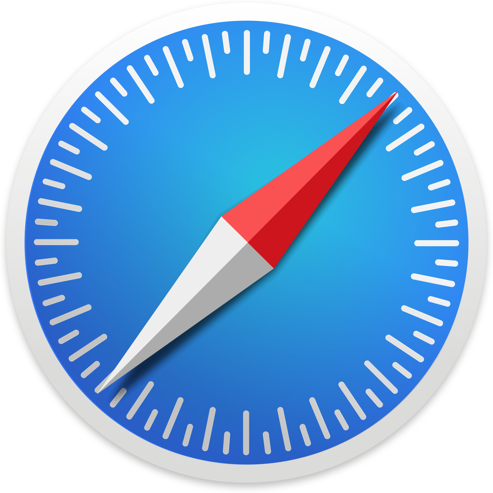
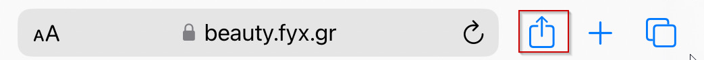
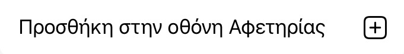

-
Ανοίξτε τον browser Safari  και επισκεφθείτε την ιστοσελίδα μας.
-
Πατήστε το κουμπί "Κοινή Χρήση" στο πάνω ή στο κάτω μέρος της οθόνης.
 -
Επιλέξτε "Προσθήκη στην Οθόνη Αφετηρίας".
 -
Πατήστε "Προσθήκη" για να επιβεβαιώσετε.